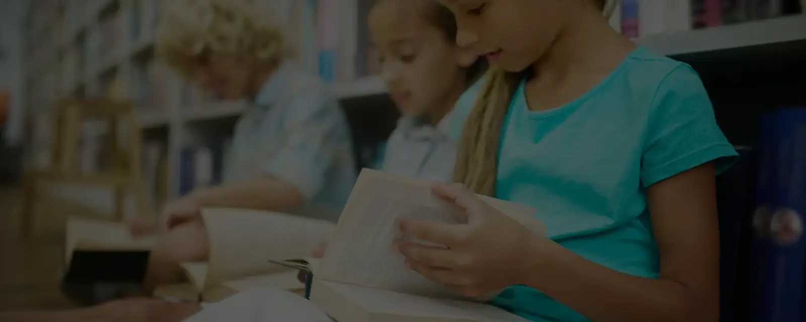
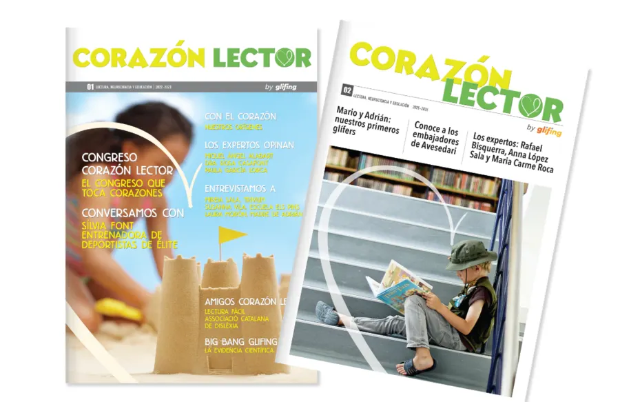
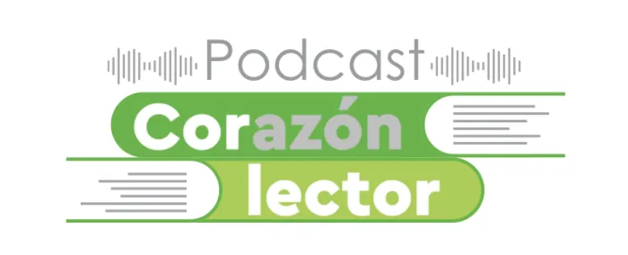

Investigación y divulgación
Impulsando proyectos de investigación en temas relacionados con las competencias lectoras a fin de sumar recursos, lograr mayores avances y divulgar los resultados obtenidos para compartir conocimiento.
Investigaciones actuales
Atención y memoria con Glifing
Evaluación de la mejora de la atención y la memoria en niños con dislexia, TDAH y trastornos del lenguaje mediante el entrenamiento con Glifing.
Avesedari · Glifing · FLENI, otros colaboradores como Liliana Fonseca
Legibilidad de textos en catalán
Desarrollo de un índice para evaluar la legibilidad de los textos escritos en catalán.
Colaboración: CONICET
Habilidades prelectoras: Latinoamérica y Cataluña
Artículo comparativo sobre las habilidades prelectoras de niños de países latinoamericanos y Cataluña, en relación con sus respectivos currículos educativos.
Colaboración: Glifing y CONICET
El Lecturómetro de las bibliotecas
Desarrollo de una herramienta para bibliotecas orientada a fomentar y acompañar la lectura.
Desarrollo de herramienta
Histórico: artículos y publicaciones
- Garcia Ortiz, M. (2023). Neurociencia de la lectura. Barcelona: Editorial Horsori. ISBN 978-841-271-904-8.
- Garcia Ortiz, M., Krieger, V., Nieto, J., & Amador Campos, J. (2020). Intervención asistida por ordenador para niños de enseñanza primaria con dificultades de lectura. 6th International Congress of Clinical and Health Psychology on Children and Adolescents. Elche.
- Garcia Ortiz, M. (2016). Cómo detectar y vencer las dificultades de aprendizaje de la lectura. Barcelona: Horsori. ISBN 978-841-521-294-2.
PENDIENTE Lista oficial de artículos y publicaciones. Estas tres salen de la ficha docente de la presidenta.
Universidades colaboradoras
Colaboramos con diferentes universidades de varios países.
PENDIENTE La Memoria 2025 cita 11 universidades; la web, 8 facultades.
Prácticas universitarias- Universitat de Barcelona – Facultad de Psicología
- Universitat Oberta de Catalunya – Facultat de Psicología
- Universidad de Castilla la Mancha en Talavera de la Reina
- USAL – Universidad de Salamanca – Facultad de Informática
- USAL – Universidad de Salamanca – Facultad de Psicología
- Universidad Pontificia de Salamanca – Facultad de Informática
- UNAH Universidad Nacional Autónoma de Honduras – Unidad Universitaria de Medicina de Rehabilitación
- Universidad de Santander en Bucaramanga en Colombia
Revista Corazón Lector
Publicación gratuita nacida con la voluntad de ofrecer un espacio de reflexión sobre la lectura, la neurociencia y el aprendizaje. Está dirigida a centros educativos, gabinetes profesionales y otros agentes interesados en la alfabetización basada en la evidencia.
Leer la revista
Pódcast Corazón Lector
Espacio sonoro impulsado por Avesedari y Glifing, destinado a difundir contenidos relacionados con el aprendizaje en general y, de manera especial, con el aprendizaje de la lectura, siempre desde una perspectiva rigurosa y fundamentada en la neurociencia.
Escuchar los últimos episodios
Formación
Compartimos lo que sabemos con profesionales, estudiantes y con la sociedad en general.
Formación